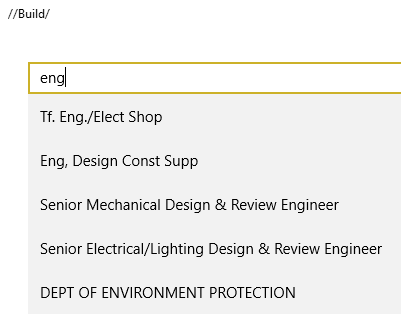
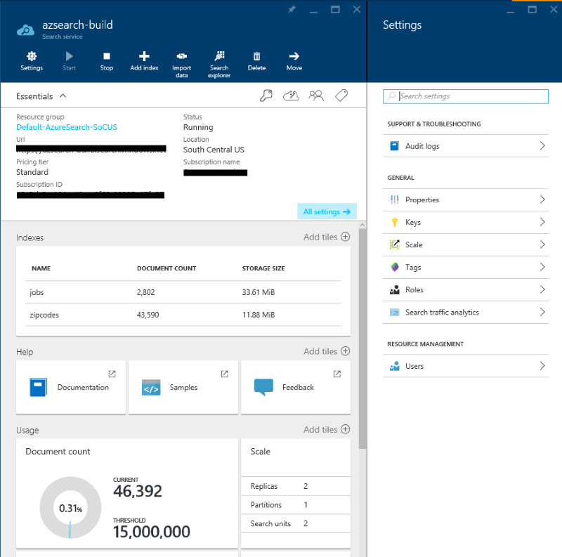
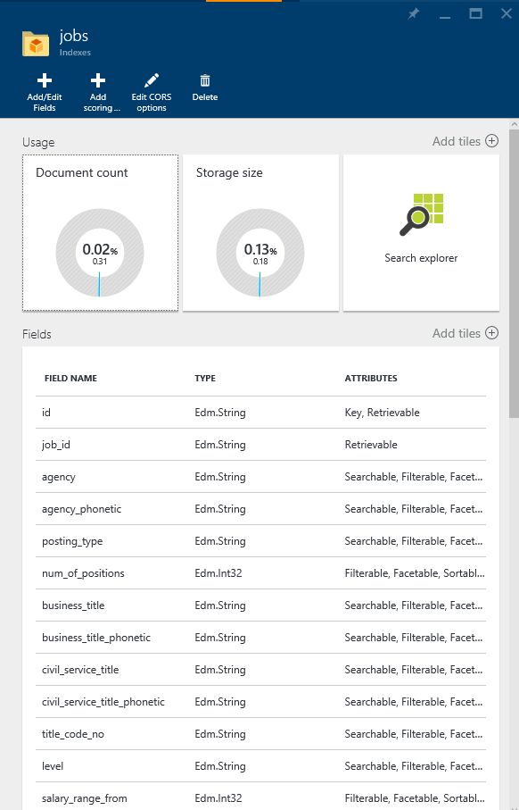
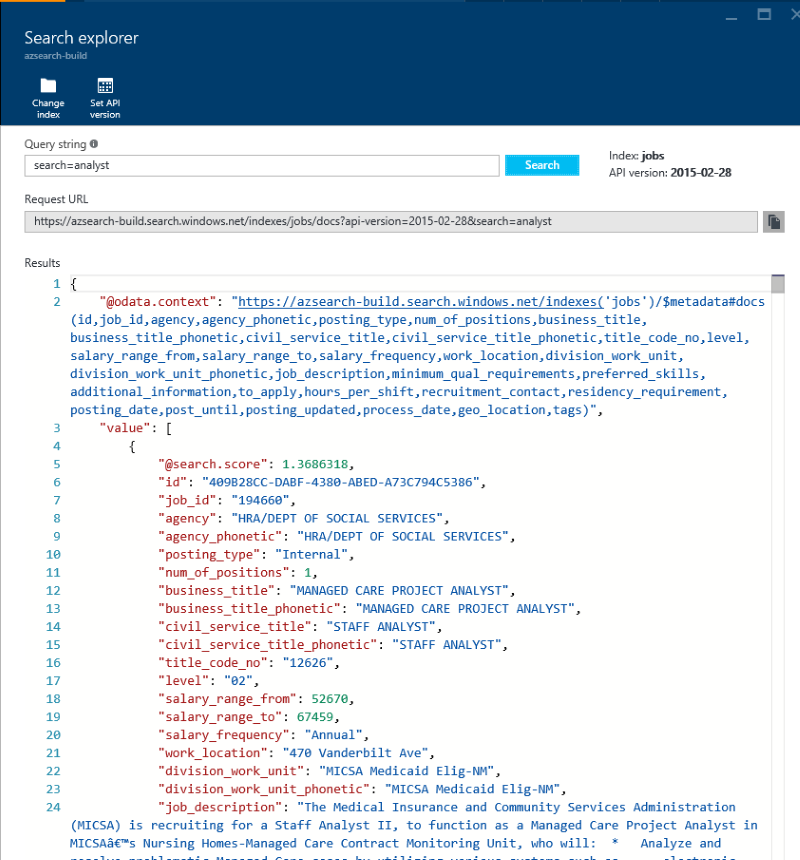

Azure Search is a fully managed search-as-a-service in the cloud. Azure Search offers scalable full-text search for your apps.
We will examine how quick and easy it is to execute searches with Azure Search, and what extra capabilities it offers us.
This hands-on lab will step you through the following features:
We have built an Azure Search index that contains jobs in New York City for the user to find.
This lab uses a simple Universal Windows Application as a test application. This simple application can be modified in order to test the various features of Azure Search.
To begin, open the Azure Search Lab.sln solution in visual studio 2015 and press F5 to compile and launch the
Windows Universal application.
The lab is broken into three Scenarios.
Note: The Azure Search index that we will be querying during this lab was created via the Azure Portal. For more information on the Azure Portal refer to the Appendix at the bottom of the page.
In this scenario we will introduce Text Searching and explain how to use Spell Corrected Search and Phonetic Search.
To begin, run the application. You are presented with a blank application with a texbox at the top. Enter "engineer"
into this text box and press enter.
You will notice that you did not get any results - let's fix this.
Navigate to the JobSearchService.cs file.
Locate the following method:
public async Task<DocumentSearchResult<JobResult>> ExecuteSearch(string query, List<FacetGroup> facets = null, PositionDistanceSearch geoSearch = null)
{
//TO DO - Place holder for search
return new DocumentSearchResult<JobResult>();
}
This is just placeholder code. Modify it so that it looks like this:
public async Task<DocumentSearchResult<JobResult>> ExecuteSearch(string query, List<FacetGroup> facets = null, PositionDistanceSearch geoSearch = null)
{
var searchParameters = new SearchParameters()
{
QueryType = QueryType.Full,
SearchMode = SearchMode.All,
};
using (var indexClient = GetClient())
{
return await indexClient.Documents.SearchAsync<JobResult>(query, searchParameters);
}
}
Press F5 to run the application, and type "engineer" into the search box. Press enter; you should be presented with a list of results.
E.g.

Clear the textbox and type "enginer" (note the spelling mistake). Press enter to search.
Notice that the results are identical - Azure Search has automatically detected the spelling mistake and has included this corrected search term along with the original misspelled word.
E.g.

Clear the textbox and type "kownsil". Press enter to search. You will see results related to "counsel".
Azure Search supports phonetic ("sounds like") searching. With very little work, we have leveraged a very powerful search tool that we can use in our application.
You can learn more about how Azure Search enables phoenetic and spelling mistake handling in the Azure Blog
E.g.

A common app feature is the "auto-complete" textbox. Azure Search supports auto-complete suggestions out of the box - let's see how it's done.
Stop running the application. Return to Visual Studio and navigate to JobSearchService.cs.
Locate the following method stub:
public async Task<List<string>> ExecuteSuggest(string query)
{
//TO DO - Place holder for suggest
return new List<string>();
}
Modify the method to look like this:
public async Task<List<string>> ExecuteSuggest(string query)
{
using (var indexClient = GetClient())
{
// Query the Azure Search index for search suggestions
SuggestParameters sp = new SuggestParameters()
{
UseFuzzyMatching = true,
Top = 8
};
var results = await indexClient.Documents.SuggestAsync<JobResult>(query, "sg", sp);
// Extract the text suggestions from the result set
return results.Results.Select(e => e.Text).Distinct().ToList();
}
}
You will notice that we are passing sg as the second parameter to the SuggestAsync method. This parameter names a "suggestor" that has been pre-created on the Azure Search
index that defines which fields should be used to return a set of "suggestions" based on a query.
If you would like to learn more about how Azure Search enables search suggestions, please visit the Azure Blog
Press F5 to run the application. Type "eng" into the search box. As you type you should now see the auto complete list appear and suggest search terms to you.
E.g.

In this scenario we will introduce Filtering / Faceting.
Now that we have basic search functionality, wouldn't it be nice to be able to filter the results further? Luckily this is also very easy with Azure Search using the "facets" filtering feature.
Navigate to JobSearchService.cs and locate the ExecuteSearch method that we modified in Scenario 1. It should look like this:
public async Task<DocumentSearchResult<JobResult>> ExecuteSearch(string query, List<FacetGroup> facets = null, PositionDistanceSearch geoSearch = null)
{
var searchParameters = new SearchParameters()
{
QueryType = QueryType.Full,
SearchMode = SearchMode.All,
};
using (var indexClient = GetClient())
{
return await indexClient.Documents.SearchAsync<JobResult>(query, searchParameters);
}
}
Add some facets to the query...
Facets = FacetDefinitions.Select(e => e.Key).ToList()
...so the method looks like this:
public async Task<DocumentSearchResult<JobResult>> ExecuteSearch(string query, List<FacetGroup> facets = null, PositionDistanceSearch geoSearch = null)
{
var searchParameters = new SearchParameters()
{
QueryType = QueryType.Full,
SearchMode = SearchMode.All,
Facets = FacetDefinitions.Select(e => e.Key).ToList()
};
using (var indexClient = GetClient())
{
return await indexClient.Documents.SearchAsync<JobResult>(query, searchParameters);
}
}
Note: FacetDefinitions is a Dictionary already defined with the facet names and user-friendly display strings at the top of the class:
This allows you to retreive the number of results available for the categories Agency, Posting_Type and Civil_Service_Title which you can use to further filter the search results. To learn more about how Facets work, please visit https://azure.microsoft.com/en-us/documentation/articles/search-faceted-navigation/
public static Dictionary<string, string> FacetDefinitions = new Dictionary<string, string>()
{
{"agency", "Agency"},
{"posting_type", "Internal/External"},
{"civil_service_title", "Common Job Title"}
};
As you can see we are passing in three facets: agency, posting_type and civil_service_title. Let's run the application and see what this looks like.
Press F5 to start the application. Type "engineer" into the search box and press enter.
E.g.

Azure Search now returns a collection of facets which the user can use to refine their query. We're rendering them on the UI as a list of checkboxes.
Now that we have a collection of usable facets, we need to create a filter to ask Azure Search to refine our query.
Return to Visual Studio and open JobSearchService.cs. Go to the ExecuteSearch function and add this line:
Filter = CreateFilter(facets, geoSearch)
...so that the method looks like this:
public async Task<DocumentSearchResult<JobResult>> ExecuteSearch(string query, List<FacetGroup> facets = null, PositionDistanceSearch geoSearch = null)
{
var searchParameters = new SearchParameters()
{
QueryType = QueryType.Full,
SearchMode = SearchMode.All,
Facets = FacetDefinitions.Select(e => e.Key).ToList(),
Filter = CreateFilter(facets, geoSearch)
};
using (var indexClient = GetClient())
{
return await indexClient.Documents.SearchAsync<JobResult>(query, searchParameters);
}
}
CreateFilter is a method that builds up a filter string for Azure Search. It loops through the given list of facets and encodes each one into the filter string.
This filter is written in OData expression syntax.
Some examples of filters created by this method:
(agency eq 'DEPT OF HEALTH/MENTAL HYGIENE') and (posting_type eq 'Internal')
(agency eq 'DEPT OF HEALTH/MENTAL HYGIENE' or agency eq 'DEPT OF ENVIRONMENT PROTECTION' or agency eq 'DEPT OF DESIGN & CONSTRUCTION' or agency eq 'HOUSING PRESERVATION & DVLPMNT' or agency eq 'DEPT OF INFO TECH & TELECOMM')
(agency eq 'DEPT OF ENVIRONMENT PROTECTION') and (posting_type eq 'Internal') and (civil_service_title eq 'ASSOCIATE PROJECT MANAGER')
Press F5 to run the application, then execute a search and try out filtering the results by selecting facets.
In this scenario we will introduce Geospatial filtering.
This allows you to filter results based on their proximity to a specific location or to find all results that are located within a specified boundary.
In this example, we will use the location proximity to filter jobs that are located within a certain distance of a specified location.
Azure Search supports geospatial searching if there is an field in your index of the Edm.GeographyPoint type. Let's see how easy it is to integrate
geospatial search into your queries.
Press F5 to run the application and execute an empty search.
Next click on Map Results and you should see all the search results plotted on the map.
E.g

Lets add the geo spatial search to the filter.
Return to Visual Studio and open JobSearchService.cs. Locate the CreateFilter method.
Add this section of code before the final return. This code appends the geospatial filter if it has been provided.
if (geoSearch != null)
{
if (query.Length > 0)
{
query.Append(" and ");
}
var lat = geoSearch.GeoPoint.Position.Latitude;
var lon = geoSearch.GeoPoint.Position.Longitude;
query.Append($"geo.distance(geo_location, geography'POINT({lon} {lat})') le {geoSearch.Radius}");
}
Like the facets filter, geospatial filtering is written in OData expression syntax. This is an example of a filter string that allows you to retrieve jobs located within 10KM of a point in New York city :
geo.distance(geo_location, geography'POINT(-73.9593882020563 40.7079201657325)') le 10
Press F5 to run the application. Execute an empty search.
Next click on the Map Results tab. and you should see all the search results plotted on the map.
Double click on the map to drop a "pin" and select a search radius from the drop-down menu.
E.g.

Click on Filter Results. You will see that the results have been filtered based on their geographical location!
E.g.

If you would like to learn more about geospatial filtering then check out Create a geospatial search app using Azure Search.
You can also watch Azure Search and Geospatial Data on Channel 9.
https://azure.microsoft.com/en-us/documentation/articles/search-howto-stackexchange-data/
Azure Search 101 - Getting started with Azure Search with Liam Cavanagh
The Azure Portal was used to create the Azure Search server. The Azure Portal can be found at https://portal.azure.com/.
Some features that you can use in Azure Portal with Azure Search include:
Allows you to view database settings and document/collection counts for your server.

Allows you to view your indexes and the fields they include. You can also modify them from here.

Test out your search and filter strings, and view the results.
